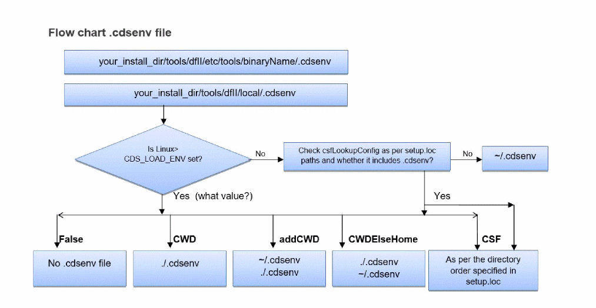
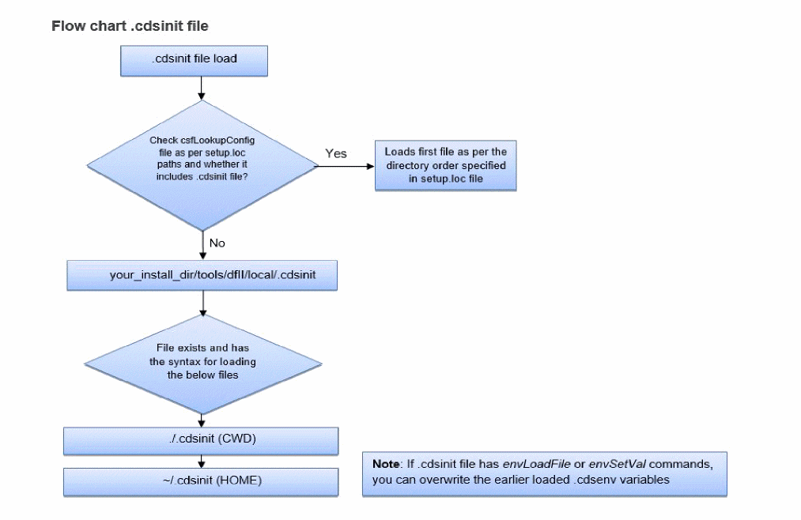
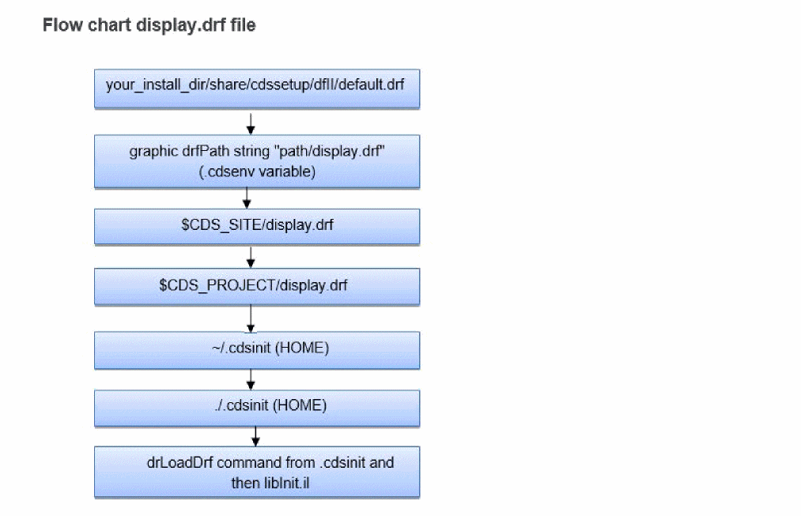

Virtuoso Studio Design Environment Files
Virtuoso loads settings in the following order:
-
.Xdefaults -
.cdsenv(environment settings)-
You can load the
.cdsenvfile as follows:
On the input line of the CIW, type the following command and press Return:envLoadFile("~/.cdsenv")
The command and its result appear in the output area. -
You can specify a custom search order for
.cdsenvby setting theCDS_LOAD_ENVenvironment variable to one of the following values:.Load currentWorkingDirectory
/.cdsenvif it exists,
otherwise~/.cdsenv, if it existsLoad
.cdsenvfiles according to the Cadence Setup Search File mechanismSpecifying
.cdsenvin yourcsfLookupConfigfile is equivalent to settingCDS_LOAD_ENVtoCSF.Environment variable: csfLookupConfig
The following rules apply:-
The
CDS_LOAD_ENVsetting is not case-sensitive. -
If
CDS_LOAD_ENVis not set or is not set to one of the above values, the default search order is used. -
The
CDS_LOAD_ENVsetting determines the default save directory as follows:Setting Default Save To File currentWorkingDirectory
/.cdsenvif it exists, elseHOME/.cdsenv
-
The
-
You can specify the colors used in the Command Interpreter Window (CIW) when displaying the following items:
- Error and warning messages that appear in the output area
- Parentheses-matching and command-matching highlighting on the input line
These color specifications are loaded only during startup and cannot be changed interactively. The software uses a 24-bit TrueColor visual by default. If it cannot find it, it looks for a 16-bit TrueColor visual. If it cannot find that either, it looks for a 15-bit TrueColor visual. If it cannot find any of these, the software fails to run.
To specify colors used in the CIW, add one of the followingciwenvironment variables to your.cdsenvfile for each color you want to specify:
ciwWarnColor
ciwErrorColor
ciwMatchParenColor
ciwMismatchParenColor
ciwMatchCmdColor
You can specify a color (color) using either its X color name (such as "orange" or "red") or its encoded RGB name (such as "#dcdcdc" for light gray or "#cce8c3" for light green).
You can change the background of the CIW to gray by setting theCDS_GRAY_BGenvironment variable (setenv CDS_GRAY_BG) before starting any tools which use the Cadence style. To switch the gray background off, useunsetenvCDS_GRAY_BG.
-
You can load the
-
.cdsinit(initialization instructions)Executable SKILL commands in your.cdsinitfile takes precedence over settings in your.cdsenvfile if you have both files in your home or workarea directory. -
display.drf(display resource file)
The display resource files get loaded in the specified order:-
The Cadence-supplied default display resource file
your_install_dir/share/cdssetup/dfII/default.drf
This file is used with the Virtuoso Schematic Composer. -
A local display resource file you specify using the
drfPathvariable in your .cdsenv file.
graphic drfPath string "path/display.drf"
Use this optional file to provide required display resource definitions. Naming the file asdisplay.drfis recommended but not required. -
Optional site
$CDS_SITE/display.drfand project$CDS_PROJECT/display.drfdisplay resource options files. Your system administrator can place these files in the site and project directories, if those directories are set active at your site. These files must be calleddisplay.drf. -
Personal display resource file (
~/display.drf)
This is an optional file that you can customize and place in your home directory. This file must be named as display.drf. -
The current directory (
./display.drf)
This is an optional file that you can customize and place in the directory from which you are initiating the software. This file must be named asdisplay.drf.
After initialization you can also load a display.drf file using SKILL function
drLoadDrf("/path/display.drf") -
The Cadence-supplied default display resource file
Related Topics
License Checkout Behavior in .cdsenv
Return to top